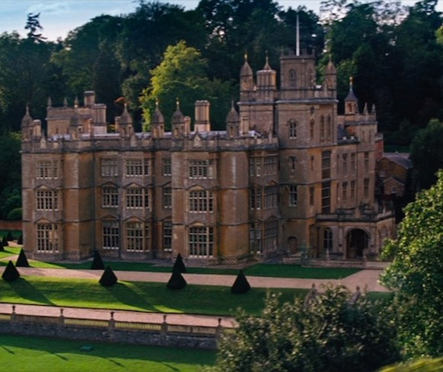

HISTORY AND LOCATION

After the N-gene was identified in the 1940's there have been constant conflicts between humans
and programmers. At the beginning the new sub-species was ignored even made fun of until it took control. One day ordinary humans
realised that their whole lives were controlled by these people carrying the new mutant gene.
Today people possessing the N-gene (named after Professor N) are considered extremely gifted and misunderstood.
Thus Professor N decided to devote his life to safeguarding innocent programmers
from human oppression, believing that both could peacefully coexist.
He decided to establish his Institute for the Gifted and found students with extraordinary talents such as
super human coding skills and problem solving. Some of these (like the Bankin Wolverine or Bogi the Cyclops) would later decide to stay and become teachers of the next
generation of N-men.
More mutants moved into and out of the institute as the N-Men family grew.
Unfortunately the original building is now destroyed in the great battle of 2014.
While it was being rebuilt, the N-Men briefly relocated to an island in the
Bermuda Triangle. When the institute was rebuild, it was upgraded with future technology and enhanced WI-FI capabilities.
Nakov's School operates as a private academy in
Sofia, but is secretly a training ground for mutants.